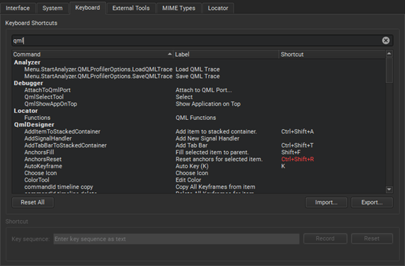

Find keyboard shortcuts
Qt Creator has many useful keyboard shortcuts. You can see the keyboard shortcut for a menu command in the menu or the tooltip for a button or in the keyboard preferences.
To look up keyboard shortcuts:
- Select Preferences > Environment > Keyboard.

- Start typing the name of a function or shortcut in the Filter field.
You can change the existing keyboard shortcuts or import and export them.
See also Keyboard Shortcuts, Assign keyboard shortcuts, and Import and export keyboard shortcuts.